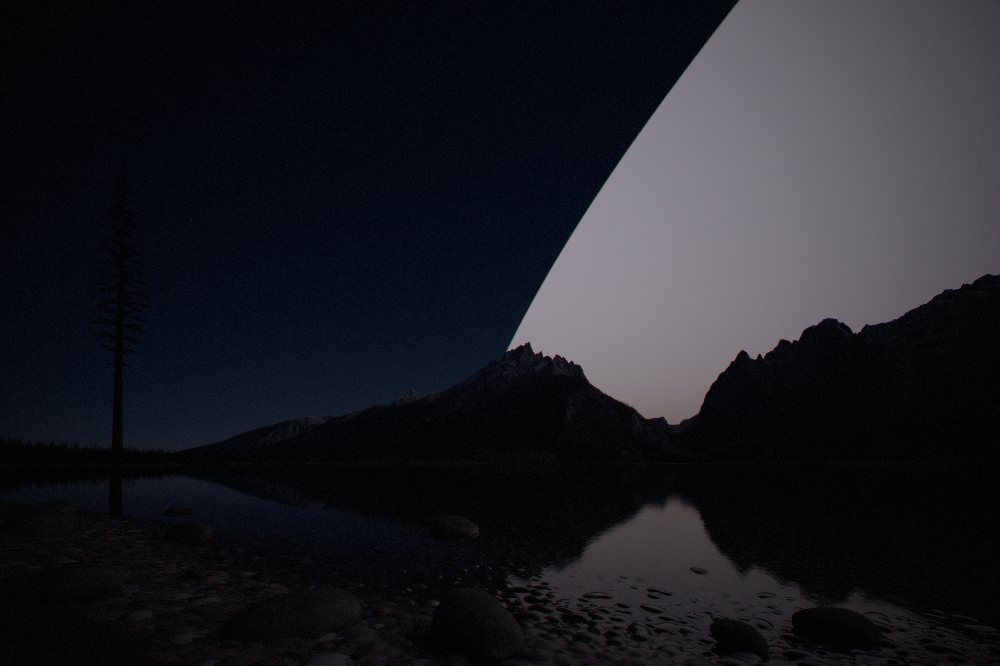
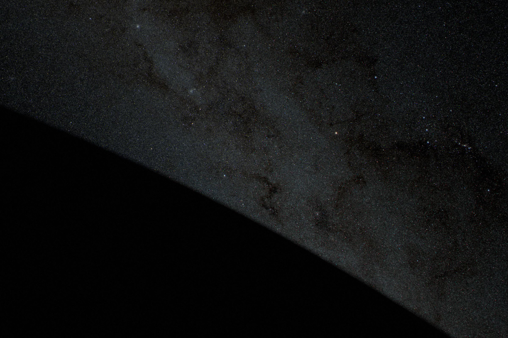
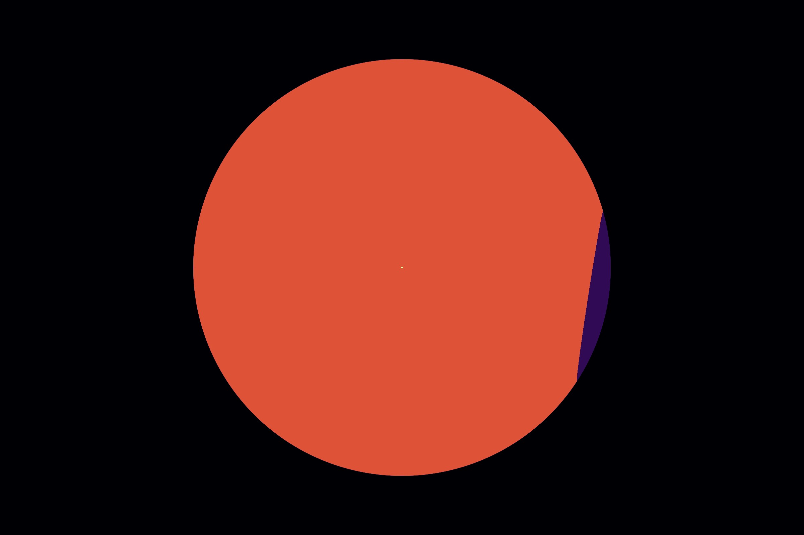

How the pictures were made
Nothing on the page is painted. Every picture is computed from the model’s numbers and the design study, with each light source at its physical brightness, and then exposed the way a photographer would expose it.
In short
- Physics first, photography second. Each render writes a scene-linear image in physical units. Exposure, white balance and tone mapping are applied afterwards, like developing a raw file, so a darker or brighter print never changes the physics.
- The sky is solved, not drawn. Twilight comes from a multiple-scattering model of the atmosphere, calibrated to measured twilight. The night sky is the Milky Way, airglow, zodiacal light and 20,000 catalogue stars, each at its measured brightness. The swarm’s glow is the formula in the Earth note, scattered by the same air.
- Two kinds of renderer. Scenes with real geometry (the lake, the sails, the pod, Mercury) are path traced in Blender Cycles. Scenes that are spheres and a sky (Earth from orbit, the sphere from far away, the view inside) are ray-cast directly in our own code.
- Thermal images use one fixed scale for each kind of scene, so the same colour always means the same temperature.
From physics to photograph
Every render works in the same units: radiance in W per square metre per steradian, with sunlight converted to what the eye sees at 93 lumens per watt. Sunlight at 1 AU is 1,361 W/m²; the Sun’s disc, the swarm’s fronts, the radiators on Mercury, city lights and airglow all enter at their physical radiance. A render writes a scene-linear EXR file that records those values.
Developing it is a separate step, in three scripts:
- Glare (
render/glare.py). A real lens spreads a little of the light from very bright points across the frame, and the swarm’s glints can be a million times brighter than its glow. The point-spread function is a narrow bloom plus a power-law veil, normalised so that energy is conserved. - Develop (
render/develop.py). An exposure in stops, a daylight white balance (5,772 K, so sunlight renders neutral), and the AgX view transform, which rolls off highlights the way film does. - Finish (
render/post.py). What a real camera adds and a renderer does not: natural vignetting, a trace of lateral chromatic aberration, and sensor noise that grows with the square root of the signal.
Cameras are metered as a photographer would meter them: on a grey card in sunlight for daylight scenes, on the sky for night scenes. Where two frames are meant to be compared, they share one exposure, and the caption says so. Where a frame has its own exposure, the caption says how much brighter or darker the scene really is.
The lake: tonight and with the swarm
The page’s recurring view is Jenny Lake in Grand Teton National Park, looking west across the water to the range, on 22 August at 22:06 local time, with the Sun 18.5° below the horizon at azimuth 308°: the end of astronomical twilight. A second frame, at 21:04, has the Sun 9° down.
The ground
- Terrain is USGS 3DEP elevation at 8 m. The lake bed is carved below the elevation model’s water surface, and a cobble beach is generated at 5 cm resolution in the foreground (
render/teton_prep.py). - Trees are conifers modelled to the twig and instanced below the 2,900 m treeline. Snowfields sit on high north- and east-facing slopes.
- Air between the camera and the range dims each ray by its length, with Rayleigh scattering and a summer aerosol load at about 2.3 km, and adds the light the air itself scatters, integrated over the whole sky. In deep twilight the air near the ground is in Earth’s shadow and lit only by the sky.
The sky
Blender’s own sky model scatters light only once. That renders civil twilight about 6 times and nautical twilight about 160 times too dark, and turns deep twilight orange where the real sky is blue. So the atmosphere is our own (render/atmosphere.py), after Hillaire (2020): Rayleigh and Mie scattering, ozone absorption, Earth’s shadow, and multiple scattering through a precomputed table. Its colour channels sit at the effective wavelengths of a camera’s sRGB output, 615, 550 and 465 nm, and ozone’s Chappuis band absorbs red more than green, which is why deep twilight comes out blue.
Even with multiple scattering, a clean-air model is 2–4 times too bright in deep twilight. So the Sun’s sky is scaled to the measured clear-sky illuminance on level ground: 3.4 lux with the Sun 6° down and 0.0083 lux at 12° (Bond and Henderson 1963), log-linear between and beyond.
The night sky behind it (render/sky_map.py):
- The Milky Way from NASA’s Deep Star Maps, calibrated to its measured surface brightness.
- Airglow at 110 S10 units at the zenith, brightening toward the horizon as the van Rhijn function predicts.
- Zodiacal light after Leinert et al. (1998).
- Stars: 20,000 catalogue stars to magnitude 8, as points placed for the sidereal time.
- Planets for the date, from JPL’s approximate orbital elements and Mallama and Hilton’s magnitudes. Venus, at −4.5, is 6° up in the west-southwest at dusk, behind the range.
The swarm in the sky
The swarm’s glow is the formula in Earth inside the swarm: f (1 − f) ρ S / π, with ρ = 0.004, uniform out to the shell’s edge. On 22 August Earth is 1.0116 AU from the Sun, so the glow ends 69.9° from the Sun and the cap 75.6°. Its colour is sunlight reflected by near-neutral hardware, plus the violet residual of the film’s anti-reflection coating, 9% of its reflectance. The glow is split into point sources so that the same atmosphere model scatters it. Behind it, stars, the Milky Way and the zodiacal light are dimmed by (1 − f) for each thin layer crossed, and the twilight sky is scaled by the sunlight Earth’s window lets through.


With the Sun enclosed (sky_map.py, kind closed) there is no glow, no zodiacal light and no planets, and stars and the Milky Way are removed inside the cap’s limb with a soft edge about half a degree wide. That frame shares tonight’s exposure exactly, so the two can be compared directly.
From low Earth orbit
The views from orbit are ray-cast in numpy (render/leo_view.py), because the scene is a sphere, its air and the sky, and integrating each ray directly is faster and more exact than path tracing. The camera is 400 km above the Nile Delta on 22 September 2128, before dawn.
- City lights are NASA’s Black Marble 2016, globally at 5 km with 1 km and 500 m crops of the region in view. A map value of 1 is taken as 3.8×10⁻³ W/m²/sr, a bright city core; that calibration is uncertain by about three times. Colour 3,500 K.
- Clouds are the Blue Marble composite at albedo 0.65; land is Blue Marble colour; the ocean has albedo 0.03 plus a rough mirror of the sky (Fresnel reflection, wave slopes after Cox and Munk).
- The air uses the same multiple-scattering model, integrated along each ray from orbit. Airglow layers emit at their own heights: oxygen’s green line at 557.7 nm at 97 km (250 rayleigh), sodium at 589 nm at 92 km, oxygen’s red line at 630 nm at 250 km.
- The Moon uses LRO albedo scaled to a mean normal albedo of 0.12, lit with lunar-Lambert photometry (McEwen 1991), plus earthshine. Its few dozen pixels are supersampled 8 × 8, or a thin crescent would vanish into aliasing.
- Stars and planets are points seen through the air’s transmittance near the limb.

From far away
The views of the whole sphere (render/sphere_space.py) are also ray-cast: the scene is two spheres. The camera is 3 AU from the Sun, 25° above the plane of the planets, with a 28 mm lens.
- In visible light the near side shows its unlit, black backs; through its gaps the far side shows its sunlit fronts, ρ S / π, and behind everything the stars. Each crossing of the thin shell passes 1 − f of the light. The frame is taken through a coronagraph, a disc 1.6° in radius over the Sun, as solar telescopes in space use, or the Sun’s glare would hide everything else. Earth is a point at its true brightness, lit through its window.
- In the infrared the backs radiate at the film’s temperature for each stage (382 K sparse, 402 K at half, 419 K closed), and the infrared-dark fronts show through the gaps. The cap in front of Earth is cold. The thermal frames share a fixed false-colour scale from 150 K (black) to 450 K (pale yellow), so the stages can be compared.


The view from inside (render/closed_inside.py) is two planes and a sky. The sky is the far side of the swarm, 1.9 AU away, every sail facing the camera with its sunlit front: 1.92 W/m²/sr. The floor is the innermost band of sails, 279 m diamonds of navy cells (albedo 0.0006) with lighter hinge strips (0.08) every 1.63 m, which the nearest sails resolve. Every vane within 400 km is tested for a flash toward the camera; at 800 m none falls in the frame, because a vane tilted at most 40° cannot throw the Sun lower than 10° above the plane.
The sail, the pod and Mercury
- The sail (
render/sail.py,sail_shot.py) is built from the design study’s dimensions. Its anti-reflection coating is a physical thin film, 110 nm of porous silica on glass, so its faint magenta-blue residual comes out of the optics rather than a chosen colour. The slight curl of each fold panel beside its hinge is an analytic normal per sample, so its glints survive at any distance. The film is exposed two stops brighter than a grey card would need, or it would print plain black. - The counter-sun, in the corner view, is the Sun mirrored back by every sail farther out along that one line. It is computed from the mesh fronts’ mirror reflection, about 4%, and the share of the view those sails cover, 19%: magnitude −21.6.
- The pod (
render/pod.py) is the design study’s 1 MW pod at 0.88 AU, in sunlight of 1,758 W/m². Its thermal image is a brightness temperature map: blades 355 K at the root falling to 345 K at the tip, wings 343 K, module 300 K, trusses 293 K, with the spec’s emissivities. - Mercury (
render/mercury.py) uses MESSENGER’s albedo mosaic (mean 0.080) and the USGS 665 m elevation model as true displacement, lit at 0.387 AU, phase 100°. The heat-wall frame paves it with radiator fields at 1,650 K; their glow is the photopic integral of a 1,650 K grey body, about 31,000 cd/m², against 21,500 cd/m² for sunlit rock. An earlier version scaled the glow by the visible share of the Planck spectrum, which overstates a cool source’s luminance, and drew the radiators on the night side only, which cannot shed the model’s heat; both were corrected.
Earth by design
The frames of Europe and North America’s Pacific coast, today and with the dry-summer belt moved north, are views from 4,000 km in July through the same atmosphere model as the views from orbit. The changed frames are made by render/med_earth.py, and the method matters, because it decides what the pictures can claim.
- Every field, forest and city stays where it is. Only the season’s palette changes, by matching the colour distribution of each changed band to that of a real region today.
- Europe: the new belt, 44–51° N and fading out to the north and east, takes the colours of today’s Mediterranean lands (Iberia, southern Italy and Greece, 37–42° N); the old southern edge, 33–37.5° N, takes those of the steppe south of the Atlas. Land above about 1,500 m keeps its colours, and summer cloud over the new belt is cut by three quarters. About 1.8 million km² changes to the Mediterranean palette and 1.2 million km² to steppe.
- The Pacific coast already has dry summers up to Seattle, so each 1° band of the coastal strip takes the July colours of the strip 5° further south. About 0.7 million km² changes. Both frames are cloud-free, because the cloud composite is not a July map and it put a storm over exactly the coast that changes.
These show one plausible outcome of the mechanism described in Earth inside the swarm. No climate model has run shading aimed this way.
What the pictures leave out
- The bands. The formation bands of the sphere would give the shell a faint texture of crossing stripes; it is drawn uniform.
- Individual sails from Earth. Each sail is about magnitude 25 from Earth, and millions share every pixel, so the glow is smooth. That is correct, not a simplification.
- Weather. The lake frames are clear nights; the swarm’s glow on cloud would light the cloud from above.
- The aurora, which ends once the solar wind stops, is absent from every frame, as it would be.
Sources and code
- Project note:
docs/renders.md; scripts inrender/; stage renders byscripts/stage-renders.shandscripts/finish-renders.sh. - Hillaire (2020), “A scalable and production ready sky and atmosphere rendering technique”, Eurographics Symposium on Rendering.
- Bond and Henderson (1963), illuminance during twilight; US Naval Observatory twilight data.
- Leinert et al. (1998), “The 1997 reference of diffuse night sky brightness”, Astronomy and Astrophysics Supplement 127.
- NASA Scientific Visualization Studio, Deep Star Maps; NASA Black Marble (2016); NASA Blue Marble (2004).
- USGS 3D Elevation Program, Grand Teton; GEBCO bathymetry and relief.
- MESSENGER MDIS global mosaic and USGS Mercury elevation model; LRO WAC albedo.
- McEwen (1991), photometric functions for photoclinometry and other applications, Icarus 92.
- Mallama and Hilton (2018), computing apparent planetary magnitudes, Astronomy and Computing 25; JPL approximate positions of the planets.
- Cox and Munk (1954), measurement of the roughness of the sea surface from photographs of the Sun’s glitter.
- Asset credits:
assets/CREDITS.md.